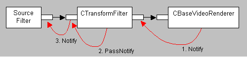

[The feature associated with this page, DirectShow, is a legacy feature. It has been superseded by MediaPlayer, IMFMediaEngine, and Audio/Video Capture in Media Foundation. Those features have been optimized for Windows 10 and Windows 11. Microsoft strongly recommends that new code use MediaPlayer, IMFMediaEngine and Audio/Video Capture in Media Foundation instead of DirectShow, when possible. Microsoft suggests that existing code that uses the legacy APIs be rewritten to use the new APIs if possible.]
The DirectShow Base Classes implement some default behaviors for video quality control.
Quality messages start at the renderer. The base class for video renderers is CBaseVideoRenderer, which has the following behavior:
What happens next depends on the upstream filter. Typically, this is a transform filter. The base class for transform filters is CTransformFilter, which uses the CTransformInputPin and CTransformOutputPin classes to implement input and output pins. Together, these classes have the following behavior:
Assuming that no transform filter handles the quality message, the message eventually reaches the output pin on the source filter. In the base classes, CBasePin::Notify returns E_NOTIMPL. How a particular source filter handles quality messages depends on the nature of the source. Some sources, such as live video capture, cannot perform meaningful quality control. Other sources can adjust the rate at which they deliver samples.
The following diagram illustrates the default behavior.

The base video renderer implements IQualityControl::Notify, which means you can pass quality messages to the renderer itself. If you set the Proportion member to a value less than 1000, the video renderer inserts a wait period between each frame that it renders, in effect slowing down the renderer. (You might do this to reduce system usage, for example.) For more information, see CBaseVideoRenderer::ThrottleWait. Setting the Proportion member to a value greater than 1000 has no effect.
Â
Â